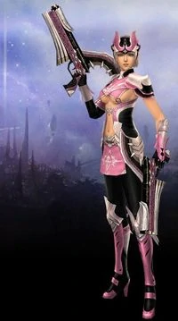

Guerreiro
Fortes e grandes, os Guerreiros usam espadas de duas mãos. Melhor classe pra combates corpo-à-corpo,e por usar espadas enormes, usa habilidades de área ao rodar sua espada atingindo todos os inimigos em sua volta, resultando num dano totalmente físico, e não mágico. Sua armadura é voltada mais para a defesa de ataques fisícos. Outra habilidade dos Guerreiros, é a de usar magias tipo buff em si própiro e em todos os membros do grupo que estiverem próximos. É uma classe mediana e boa em todos os aspectos, tanto de PvP quanto em PvE. Para qualquer outra classe, o Guerreiro pode ser o maior dos pesadelos, podendo ser um grande erro pensar em chegar perto deles.
Características
- Ataque físico médio/alto
- Ataque mágico baixo/nulo
- Defesa física e mágica media
- Party Buff (fortalecimento em grupo)
- HP grande
PvP
Tem bons ataques em área (AoE skill) e altos ataques que atingem apenas um oponente. Por ter uma defesa alta, o guerreiro nunca é um oponente fácil de matar. O guerreiro é bastante dinâmico por ter ataques de área, de single target, e ataques à distância (não como são os de mago, pistoleiros e etc., mas por poderem ser usados de longe, o guerreiro alcança um alvo que está longe ou tentando fugir).
PvE
Totalmente independente de ajuda de terceiros para poder completar quests ou matar bosses. Pra quem é novo em Aika, ou não é muito se fazer amigos enquanto joga, ou que simplesmente prefere upar sozinho, é uma das melhores classes. Um método bastante utilizado pelos guerreiros é o "mobar", "tankar" ou "lurar", que é o ato de atrair os mobs ao redor para si e matá-los usando ataques em área, isso faz com que os guerreiros terminem as quests gastando menos tempo.
Promoção
Ao chegar no nível 50, o Guerreiro fará uma linha de quests de promoção. Essa linha de missões são obrigatórias para o progresso do jogador em sua jornada. Ao terminá-la, o Guerreiro se tornará um Gladiador, tornando possível novamente a evolução do mesmo e a adquirição de novas habilidades.
Templária
O Templário é um pilar de sustentação em Aika, característica de sua alta defesa. Usam escudos e espadas de umamão, fazendo da classe um lutador de curta distância, porém, em certos casos a força do Templário se expande, tomando proporções de batalha de média distância. Com a habilidade de curar e absorver magias de outros player e monstros, o valor de um Templário no campo de batalha é incalculável. Tem extrema facilidade em manipular os ataques adversários para concentrá-los em si, defendendo os outros membros do grupo. O Templário é muito requisitado em calabouços como Aquados, Tyriantor e Cauchemar
Características
- Alta defesa física e mágica
- Vantagem em lutas contra mortos-vivos
- Velociade de ataque alta
- Ataque físico e mágico com dano muito baixo
PvP
Um personagem versátil, com ampla capacidade de combate. Apesar do seu baixo dano, poder ser compensado pela sua excelente defesa, tanto mágica quanto física. Devido skills de Reflect/Stun e Silence, se bem usadas podem ser fatais em um PvP.
PvE
São ótimas para dungeons, excelente defesa, é capaz de utilizar buffs de cura em si mesma ou em outros players
Promoção
AApós chegar ao nível 50, o Templário passará por linha de quests de promoção. Essas missões são obrigatórias para a continuação do desenvolvimento do personagem, e só assim poderá evoluir. Ao terminá-las, o Templário se tornará um Paladino, permitindo a evolução para o nível 51 e adiante.
Atirador
Precisão, furtividade, pontaria e sangue frio, essas são as qualidades básicas para quem quer ser um atirador, também conhecido como a concentração de Aika, pois nada abala essa classe uma vez que ele tenha começado a lutar. Munido de muita paciência e determinação, essa classe não se apressa em eliminar seus inimigos, eles se escondem nas sombras esperando o momento certo para atirar, e normalmente, eles precisam de apenas um tiro para concluir o “trabalho”. Em níveis mais avançados, essa classe conta com a habilidade de disparar tiros que afetam áreas inteira, bem como o poder de construir torres de disparo automático, fazendo com que os inimigos não tenham ideia de onde o atirador está escondido. No campo de batalha, o atirador é alguém que elimina os inimigos sem denunciar sua posição, acabando com fileiras inteiras de inimigos fracos antes de saberem o que os atingiu.
Características
- Ataque físico muito alto
- Velocidade de ataque baixa
- Defesa média
- HP médio
- Ataca com invisibilidade
- Consome MP rapidamente
PvP
Uma das melhores classes no PVP, se usado corretamente. Devido seu alto cast de skills, deve tomar cuidado com que skill usar e em qual momento. Tendo a capacidade de ficar invisivel, pode surpreender seus inimigos com AoEs devastadores e alta taxa de crítico.
PvE
Classe mediana para PvE, maior dano com os equipamentos corretos e pouco requisitada em party. Podendo encontrar certa dificuldade para upar sozinho, devido a sua pouca defesa física e mágica.
Promoção
Ao chegar ao nível 50, o Atirador precisa fazer uma linha de quests. Essas missões são obrigatórias para o desenvolvimento e evolução do jogador. Após todas essas quests serem completadas, o Atirador se tornará um Dinamitador.
Pistoleira
O Pistoleiro está sempre no limite de suas habilidades, a adrenalina correndo pelo corpo enquanto corre e atira emseus inimigos, não parando nem para respirar, sua agilidade incrível faz com que essa seja uma classe perigosa. Suas pistolas podem envenenar ou paralisar qualquer um que esteja em seu caminho ou que seja inconseqüente demais para desafiar um pistoleiro para um duelo. Além disso, o pistoleiro pode usar suas skills para aumentar ainda mais sua velocidade e melhorar o dano de suas armas, tornando essa classe mortal para inimigos encurralados. No campo de batalha ela é uma ótima aliada para eliminar rapidamente qualquer resistência, enquanto as outras classes marcham para a guerra, o pistoleiro corre ao mesmo tempo em que distribui uma saraivada de balas.
Características
- Ataque mágico médio/alto
- Agilidade extrema
- Baixas defesas
- Skill de invisibilidade
- HP relativamente baixo
PvP
Uma das melhores classes no PVP, se usado corretamente claro. Devido seu alto cast de skills, deve tomar cuidado com que skill usar e em qual momento. Tendo a capacidade de ficar invisivel, pode surpreender seus inimigos com AOEs devastadores e alta taxa de crítico.
PvE
Classe mediana para PvE, maior dano com os equipamentos corretos e pouco requisitada em party. Podendo encontrar certa dificuldade para upar sozinho, devido seu HP relativamente baixo.
Promoção
Após chegar ao nível 50, o Pistoleiro passará por uma linha de quests obrigatória. Estas são necessárias para a evolução do personagem. Após a conclusão de todas essas missões, o Pistoleiro se tornara um Desperado.
Feiticeiro Negro

Brilhante e poderoso, o Feiticeiro Negro é o mestre da ofensiva mágica. Ao longo de sua vida, o Feiticeiro deve escolher entre dois caminhos, usar magias de elemento Lightning (eletricidade) ou Fire (fogo). Em ambas escolhas, todos os Feiticeiros possuem magias de alvo e de área muito fortes. Usam cajados como arma e túnicas como roupa, dando-lhes uma agilidade maior na hora da invocação das magias, mas por outro lado, os deixam muito fracos em combates curtos em corpo-à-corpo. Em troca de suas magias mais poderosas, há risco de dano ao usá-las, nesse caso é sempre bom para o Feiticeiro ter uma ajuda de um Templário ou de um Clérigo para o quesito defesa.
Uma das únicas classes que se pode fazer varias builds diferentes usando qualquer elemento de Pran.
É considerado pelos players das versões americana e japonesa a melhor classe para ser Marechal, pois seu alto dano e sua Mana Shield combinada com os buffs de Marechal se torna quase imortal.
Características
- Ataque mágico muito alto
- Ataque físico muito baixo
- Defesa mágica alta
- Defesa física muito baixa
- Capacidade de transferir parte dos danos sofridos para a Mana
PvP
Feiticeiro Negro nunca é um facil oponente, com skill de paralisação e seu dano muito alto, com uma boa build e itens certos se torna um monstro na guerra, mas se for pego desprevinido por alguma skill que impede de usar outras skills fica sem nenhuma reação.
Por ter a capacidade de paralizar players, soltar magias de área e, de usar magias de alvo sem tempo de lançamento, os Feiticeiros são primordiais em qualquer tipo de disputa em PvP. Assim como os atiradores, os feiticeiros podem deixar seus alvos constantemente lentos durante uma disputa de PvP através de skills e debuffs, dando-lhes certa vantagem no PvP contra classes que atacam de perto. Também os fazem muito importantes em grupos de missões. Mas tambem tem uma boa desvantagem contra ataque físico, contra um guerreiro que aparece de surpresa por exemplo.
PvE
Totalmente independente de ajuda de terceiros para poder completar quests ou matar bosses. Pra quem é novo em Aika, ou não é muito se fazer amigos enquanto joga, ou que simplesmente prefere upar sozinho, é uma das melhores classes. Um método bastante utilizado pelos guerreiros é o "mobar", "tankar" ou "lurar", que é o ato de atrair os mobs ao redor para si e matá-los usando ataques em área, isso faz com que os guerreiros terminem as quests gastando menos tempo.
Promoção
Ao chegar no nível 50, o Feiticeiro Negro fará uma linha de quests de promoção. Essa linha de missões são obrigatórias para o progresso do jogador em sua jornada. Ao terminá-la, o Feiticeiro Negro se tornará um Feiticeiro Caótico, tornando possível novamente a evolução do mesmo e a aquisição de novas habilidades.
Clériga
Os Clérigos representam a compaixão da Deusa Aika para os humanos, quando ela em toda a sua bondade salvou a raça humana erguendo-os em uma ilha no céu. Aqueles que subestimam o Clérigo achando que são fracos pela sua baixa estatura e a falta de força física, talvez não sobrevivam para se arrependerem disso.
Essa classe é especializada em cura, aumentar os atributos de seus aliados, capaz de absorver grandes quantidades de dano e até ressuscitar seus companheiros caídos em batalha. Seus poderes ainda podem cancelar efeitos mágicos sobre seus inimigos, retirando qualquer bônus que eles tenham conseguido com magia e ainda puni-los por tentar usar magias sobre eles mesmos.
O Clérigo também é de grande ajuda contra mortos-vivos e demônios. Ainda que pareçam jovens e inexperientes, os Clérigos não têm medo de entrarem no campo de batalha para ajudar seus companheiros e livrar o mundo as forces malignas, sempre pedindo à Deusa Aika sua benção.
Características
- Pouco dano
- HP alto
- Velocidade de ataque baixa
- Buffs de recuperação e defesa
PvP
Fundamental em um grupo, com sua cura e seus buffs, fracas enquanto sozinhas
PvE
Sempre requisitado em Dungeons, o Clérigo é a essência de toda a party. Com excelentes buffs de recuperação e defesa, um Clérigo com a presença de um Templário tornam-se praticamente imortais. Seu pouco dano é recompensado com buffs dignos de seu nome, salvando seus amigos nos momentos mais difíceis.
Promoção
Ao chegar no nível 50, o Clérigo fará uma linha de quests de promoção. Essa linha de missões são obrigatórias para o progresso do jogador em sua jornada. Ao terminá-la, o Clérigo se tornará um Santo.